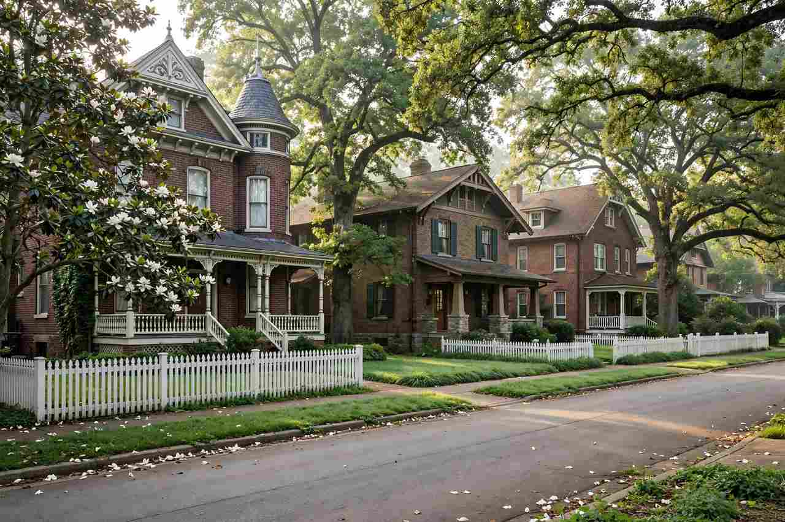

Rodent Control · Madisonville, KY
Fast Rodent Control in Madisonville, KY
If rodents have moved into your Madisonville home or business, Murvo can help today. Our local, licensed crews provide same-day inspection, targeted removal, durable exclusion, and cleanup, all under one flat-rate written quote with a written guarantee. No hourly billing and no surprise add-ons, just rodent specialists serving Madisonville and communities throughout Hopkins County every day of the week. Service covers 1 ZIP codes across Hopkins County, including 42431, with same-day appointments where schedules allow.
24/7Availability
1ZIP codes covered
Same-dayResponse
Licensed · Upfront options · Written guarantees · Fully insured
Madisonville at a glance
Local Rodent Control for Madisonville, KY.
Hopkins County
Countysouthwest Kentucky
RegionBowling Green · 64 mi
Nearest metro156 miles west of Frankfort
From Frankfort1
ZIP codes covered Service by service in Madisonville
Rodent Control Services Available in Madisonville
The full range of residential and commercial rodent services in Madisonville and Hopkins County - built around the species and housing here, from emergency removal and same-day control to exclusion, proofing, trapping, cleanup, and damage repair. Every service below is quoted flat-rate in writing and backed by our workmanship guarantee.
- 01Rodent Control↗
- 02Rodent Inspection↗
- 03Rodent Removal↗
- 04Rodent Exclusion↗
- 05Rodent Proofing↗
- 06Rat Control↗
- 07Mice Control↗
- 08Mouse Removal↗
- 09Rat Removal↗
- 10Rodent Trapping↗
- 11Rodent Baiting↗
- 12Rodenticide Application↗
- 13Attic Rodent Removal↗
- 14Crawl Space Rodent Removal↗
- 15Wall Rodent Removal↗
- 16Kitchen Rodent Control↗
- 17Garage Rodent Control↗
- 18Commercial Rodent Control↗
- 19Residential Rodent Control↗
- 20Emergency Rodent Removal↗
- 21Same-Day Rodent Control↗
- 22Rodent Damage Repair↗
- 23Rodent Waste Cleanup↗
- 24Rodent Disinfection↗
- 25Rodent Odor Removal↗
- 26Dead Rodent Removal↗
- 27Rodent Dropping Cleanup↗
- 28Rodent Exclusion for Roofs↗
- 29Rodent Exclusion for Vents↗
- 30Rodent Exclusion for Chimneys↗
Rodent Control in Madisonville
Rodent Control in Madisonville
Droppings along baseboards, scratching after dark, or chewed packaging in Madisonville usually mean Roof rat (Rattus rattus) or Norway rat (Rattus norvegicus) have moved in, not just passing through. Murvo's rodent control starts with a full inspection, removes the animals already inside, and seals the gaps they used. You get one flat-rate written quote before work begins, backed by our written workmanship guarantee.
In Madisonville, rodent control is not a generic spray-and-go service. Rodents exploit rooflines and eaves, attic vents, crawlspace doors and vents, and gaps where tree limbs touch the roof in bungalows and ranch homes with crawlspaces, historic homes, and suburban homes under mature tree canopy, and a fix that ignores those routes does not last. Murvo's Madisonville team inspects first, shows you the evidence - droppings, gnaw marks, entry gaps - and then lays out the work with a flat-rate written quote. We serve all of Hopkins County from Madisonville, including Earlington, Manitou, and every job is covered by our written workmanship guarantee. Around St. Charles, Nortonville, Earlington, the pattern is similar: Norway rat (Rattus norvegicus) finds rooflines and eaves, attic vents, crawlspace doors and vents, and gaps where tree limbs touch the roof first, and lasting rodent control has to close those routes.
The pattern in Hopkins County is predictable, so the response should be methodical. First comes identification, because Roof rat (Rattus rattus) and Norway rat (Rattus norvegicus) nest and feed in different places. Traps then go where travel is proven, not where it is convenient, and catches are logged by location. Sealing follows only after activity drops, using materials matched to each opening. Finally, monitoring stays in place long enough to catch a late survivor or a new arrival, and those readings decide when the program closes. That discipline is what turns a busy first week into a genuinely quiet second month for the household.
After you book, we confirm a time window and your background-checked technician arrives in a marked vehicle with identification. They walk the property with you, inspect inside and out, and explain what they find with photos. You receive a flat-rate written quote before any work starts. Once approved, trapping and sealing begin, and follow-up visits are scheduled before we leave, with the guarantee in writing. No work begins without your approval.
In most of Madisonville, we can offer a same-day appointment for rodent control, and our lines are open 24/7 for urgent cases like scratching in the walls or a rodent in a living area. Your technician inspects first, explains the plan, and quotes a flat rate in writing before any work begins, so help starts fast without surprises. The written quote for your Madisonville property will spell out exactly which of these applies before any work starts.
Murvo does not quote rodent control sight unseen, because species, activity, and sealing needs change the work involved. After inspection you get one flat-rate written quote, and that is the figure you pay. As national context only, Angi's 2026 figures put rat and mouse removal and control at an average of $396, with a typical range of $189 to $655 — a benchmark, not a Murvo price.
Rodent Inspection in Madisonville
Rodent Inspection in Madisonville
A proper rodent inspection in Madisonville answers three questions: which species is active, where is it nesting, and how is it getting inside? Our licensed, insured technicians document runways, droppings, and damage with photos and plain-language notes, then separate urgent fixes from preventive ones. There is no pressure to proceed, and every recommendation is priced in writing first.
When you need rodent inspection in Madisonville, the job starts with what is actually happening in your part of Hopkins County. Murvo crews work Madisonville every week, so they know how Roof rat (Rattus rattus) and Norway rat (Rattus norvegicus) behave around bungalows and ranch homes with crawlspaces, historic homes, and suburban homes under mature tree canopy here - and where they get in: rooflines and eaves, attic vents, crawlspace doors and vents, and gaps where tree limbs touch the roof. We arrive equipped for the full job, confirm the flat rate in writing before work begins, and cover the whole Madisonville area, including Earlington, Manitou. No call-center runaround and no open-ended hourly billing - just a local crew, a clear plan, and a written quote you approve first. Coverage for rodent inspection spans 1 ZIP codes in Hopkins County, including 42431.
The inspection starts outside, where we check the foundation, siding, pipe penetrations, garage doors, and roof junctions, because mice can squeeze through a gap the width of a pencil. Inside, we examine the attic, crawl space, insulation, stored items, and food areas for droppings, nests, rub marks, and gnaw damage. We also note where bungalows and ranch homes with crawlspaces, historic homes, and suburban homes under mature tree canopy create hidden routes through rooflines and eaves, attic vents, crawlspace doors and vents, and gaps where tree limbs touch the roof. Every finding is photographed and explained, and recommendations are marked urgent or preventive so you can stage the work sensibly.
Your part is simple: point out noises, droppings, and any past problems. Before leaving, you walk through the evidence together, discuss priorities, and decide what happens next, with no obligation attached. Ours is everything else. A background-checked technician arrives on time, protects access areas, and inspects inside and out against a set checklist. If you decide to proceed, those findings become the working plan, so no second survey is needed before approved repairs begin.
You do not have to wait days for answers in Madisonville. Same-day rodent inspection appointments are available in most areas, urgent calls are taken 24/7, and most home inspections take under an hour. You finish the visit with photos, written findings, and flat-rate pricing for anything we recommend. Murvo's Madisonville crews explain the finding either way, and the flat-rate quote leaves the decision with you.
Your exact rodent inspection price is confirmed before we visit, and any follow-up work is quoted as a flat rate in writing after the inspection — no hourly billing. For context, Angi's 2026 data puts a professional rodent inspection nationally at $100 to $200, often credited toward the job if you proceed.
Rodent Removal in Madisonville
Rodent Removal in Madisonville
In bungalows and ranch homes with crawlspaces, historic homes, and suburban homes under mature tree canopy, removal fails when it ignores how rodents actually live: close to food, water, and undisturbed cover near rooflines and eaves, attic vents, crawlspace doors and vents, and gaps where tree limbs touch the roof. Our rodent removal in Hopkins County starts by mapping that daily pattern, then removes animals room by room, including attics and garages, until monitoring, not optimism, says the home is clear.
Homeowners in Madisonville call Murvo for rodent removal because the problem here is specific: Roof rat (Rattus rattus) pressure around bungalows and ranch homes with crawlspaces, historic homes, and suburban homes under mature tree canopy, tight access at rooflines and eaves, attic vents, crawlspace doors and vents, and gaps where tree limbs touch the roof, and activity that follows the local season. Our Hopkins County crews diagnose the real source before recommending work, explain the options in plain language, and quote one flat rate in writing. Across Madisonville - including Earlington, Manitou - every visit is backed by licensed, insured technicians and our written workmanship guarantee. Seasonal timing matters for rodent removal in Madisonville: Rodents are most active in Madisonville from September through February.
Removal here is measured in records, not impressions. Each trap is numbered, mapped, and checked on schedule, and every catch is logged against its location. That log shows where activity concentrates, where it is fading, and where a placement needs to move. When the log stays empty across repeat checks, removal is genuinely finished. Sealing recommendations follow immediately, because a clear home with open gaps will not stay clear for long in Madisonville. That record also protects you, because it shows exactly when activity ended rather than when visits simply stopped.
Once you book rodent removal in Madisonville, we agree a time window and your technician arrives with traps, protective equipment, and a clear plan. The first visit confirms activity and sets traps; return visits clear and reset them on schedule. When catches reach zero, we walk through the results, discuss sealing, and confirm your written guarantee before closing the job. Progress is photographed and shared with you throughout the program. Nothing is left unexplained.
When rodents are active indoors in Madisonville, waiting rarely helps. Rodent removal can usually start the same day you call, our line answers 24/7 for a rodent loose in a living area, and the first visit sets traps straight away. Scheduled returns then clear and reset them until monitoring shows the home is clear. A Madisonville inspection confirms it on site - dropping size, gnaw marks, and entry points tell the story quickly.
How many animals are active, which species they are, and how much sealing follows removal all shape the price, so we assess first and then quote one flat rate in writing. Angi's 2026 national context — an average of $396 and a typical $189 to $655 range for rat and mouse removal — is provided for comparison only; your written quote is the exact Murvo figure.
Rodent Exclusion in Madisonville
Rodent Exclusion in Madisonville
Trapping alone only buys time if rodents can walk straight back in. Rodent exclusion in Madisonville is the permanent fix: a full entry-point survey, then sealing with materials rodents cannot gnaw through. Murvo clears active animals first so none are sealed inside, gives one flat-rate written quote before work starts, and guarantees the workmanship on every seal installed.
Homeowners in Madisonville call Murvo for rodent exclusion because the problem here is specific: Roof rat (Rattus rattus) pressure around bungalows and ranch homes with crawlspaces, historic homes, and suburban homes under mature tree canopy, tight access at rooflines and eaves, attic vents, crawlspace doors and vents, and gaps where tree limbs touch the roof, and activity that follows the local season. Our Hopkins County crews diagnose the real source before recommending work, explain the options in plain language, and quote one flat rate in writing. Across Madisonville - including Earlington, Manitou - every visit is backed by licensed, insured technicians and our written workmanship guarantee. Seasonal timing matters for rodent exclusion in Madisonville: Rodents are most active in Madisonville from September through February.
Exclusion begins with a full exterior survey, paying particular attention to junctions where different materials meet, because those seams and transitions open up as a building ages and settles. Door sweeps are fitted, pipe gaps closed, and specialist roof, vent, and chimney sealing finished to weatherproof standards. Each opening is sealed with materials matched to it: copper mesh packed into gaps, hardware cloth over vents, metal flashing at roof junctions, and quality sealants for smaller cracks. Active animals are trapped out first.
After booking rodent exclusion in Madisonville, your technician first surveys the whole exterior and confirms which openings are active. Sealing is then completed opening by opening, photographed as we go, and finished with a walkthrough together. Follow-up monitoring is arranged, and every seal is covered by the written workmanship guarantee. You receive a flat-rate written quote listing each seal before work starts. No opening is sealed without being shown to you first.
The first step is a survey, and in Madisonville we can often schedule that survey the same day you call about rodent exclusion. Sealing follows once active animals are cleared — nothing is ever sealed inside — and most homes are fully sealed within days, with entry points near wiring or food areas handled first. Murvo's Madisonville crews explain the finding either way, and the flat-rate quote leaves the decision with you.
For national context, Angi's 2026 data puts basic exclusion at $200 to $600, depending on access and the number of openings. That is a benchmark, not a Murvo price. After surveying your Madisonville home, we list every opening that needs sealing and quote one flat rate in writing, so you pay for the work your property actually needs and nothing more.
Rodent Proofing in Madisonville
Rodent Proofing in Madisonville
Proofing matters most where rodent pressure stays high all year: older bungalows and ranch homes with crawlspaces, historic homes, and suburban homes under mature tree canopy in Madisonville, homes near fields, water, or dense vegetation, and properties with cluttered garages or overhanging branches. Our plan separates quick wins you can handle yourself from specialist sealing that needs professional materials, keeping the whole program practical, transparent, and easy to stage over time.
Homeowners in Madisonville call Murvo for rodent proofing because the problem here is specific: Roof rat (Rattus rattus) pressure around bungalows and ranch homes with crawlspaces, historic homes, and suburban homes under mature tree canopy, tight access at rooflines and eaves, attic vents, crawlspace doors and vents, and gaps where tree limbs touch the roof, and activity that follows the local season. Our Hopkins County crews diagnose the real source before recommending work, explain the options in plain language, and quote one flat rate in writing. Across Madisonville - including Earlington, Manitou - every visit is backed by licensed, insured technicians and our written workmanship guarantee. Coverage for rodent proofing spans 1 ZIP codes in Hopkins County, including 42431.
Proofing starts with a whole-property assessment inside and out, from overhanging branches and cluttered garages to unsealed vents and gaps under doors. We also address attractants: securing pet food and bird seed storage, trimming vegetation away from walls, and clearing harborage. Every item is prioritized so essential work happens first. The plan typically combines structural sealing of utility entries and foundation cracks with mesh screening on vents, chimneys, and rooflines, plus door sweeps where light shows underneath. Photos show each weakness we find.
On proofing day, expect one tidy visit for most homes. Agreed sealing and screening are completed, sweeps are fitted, and attractant advice is tailored to your garage, kitchen, and yard. Before leaving, you walk the finished work together, confirm the guarantee in writing, and book the seasonal re-check that keeps the protection current year after year. The re-check is not a formality, because it catches shifted sweeps, damaged screens, and new gaps before rodents discover them first.
Rodent proofing is preventive, so there is rarely a rush, but surveys in Madisonville can often be arranged the same day you call, and always within a few days. Most proofing work is completed in a single visit once you approve the plan, and booking before colder weather gives your home protection ahead of the seasonal rush indoors. The written quote for your Madisonville property will spell out exactly which of these applies before any work starts.
For national context, Angi's 2026 data puts exclusion, the core of proofing, at $200 to $600 for basic work. That figure is a benchmark, not a Murvo price. After surveying your Madisonville property, we separate quick homeowner wins from specialist sealing and quote the professional work as one flat rate in writing, so you can stage spending sensibly.
Rat Control in Madisonville
Rat Control in Madisonville
Most Madisonville rat calls start with evidence in the attic: droppings too large for mice, greasy rub marks, insulation tunneled overnight. Murvo identifies whether Roof rat (Rattus rattus) or Norway rat (Rattus norvegicus) is responsible, maps nightly routes, and builds control around trapping and exclusion. One flat-rate written quote is approved before work begins.
In Madisonville, rat control is not a generic spray-and-go service. Rodents exploit rooflines and eaves, attic vents, crawlspace doors and vents, and gaps where tree limbs touch the roof in bungalows and ranch homes with crawlspaces, historic homes, and suburban homes under mature tree canopy, and a fix that ignores those routes does not last. Murvo's Madisonville team inspects first, shows you the evidence - droppings, gnaw marks, entry gaps - and then lays out the work with a flat-rate written quote. We serve all of Hopkins County from Madisonville, including Earlington, Manitou, and every job is covered by our written workmanship guarantee. Coverage for rat control spans 1 ZIP codes in Hopkins County, including 42431.
Control starts with species and route identification, because roof rats and Norway rats behave and enter very differently. Technicians pre-bait unset traps along proven runways so wary rats feed confidently, then set them and return to check, clear, and adjust placements until activity stops. Trapped rats are removed hygienically, and each visit is documented with locations and counts. We then pair the program with roofline and entry-point exclusion, plus attic removal and cleanup where nests are found overhead. Progress is visible at every visit.
After booking, we confirm access to attics, basements, and outbuildings so the first visit is productive. Follow-up visits are booked ahead, trapped rats are removed promptly, and a final monitoring check verifies the result before sign-off under our written workmanship guarantee. On arrival, your background-checked technician walks the property with you, sets out the plan, and starts pre-baiting straight away once you approve the quote. You see documented progress at each visit.
Rats do not wait, and neither do we: rat control in Madisonville can usually start with a same-day inspection, and urgent calls are answered 24/7. Pre-baiting begins on the first visit once you approve the written quote, traps are set as soon as rats are feeding confidently, and scheduled checks keep the program moving until activity stops. Murvo's Madisonville crews explain the finding either way, and the flat-rate quote leaves the decision with you.
Species, colony size, and the number of entry points to seal all affect rat work, which is why Murvo inspects first and quotes one flat rate in writing. Angi's 2026 figures, given for national context only, average rat control and removal at $396 and typically run $189 to $655; the written quote for your Madisonville home is the exact price.
Mice Control in Madisonville
Mice Control in Madisonville
Most Madisonville mouse problems announce themselves in the kitchen first: droppings in a drawer, a chewed corner on stored food, movement behind the kickboard. Murvo surveys those hotspots, clusters traps where mice actually travel, seals gaps, and covers the program with one flat-rate written quote approved in advance.
In Madisonville, mice control is not a generic spray-and-go service. Rodents exploit rooflines and eaves, attic vents, crawlspace doors and vents, and gaps where tree limbs touch the roof in bungalows and ranch homes with crawlspaces, historic homes, and suburban homes under mature tree canopy, and a fix that ignores those routes does not last. Murvo's Madisonville team inspects first, shows you the evidence - droppings, gnaw marks, entry gaps - and then lays out the work with a flat-rate written quote. We serve all of Hopkins County from Madisonville, including Earlington, Manitou, and every job is covered by our written workmanship guarantee. Coverage for mice control spans 1 ZIP codes in Hopkins County, including 42431.
Our integrated approach favors trapping and sealing over baits, with genuinely pet-safe options for family homes. Droppings in cabinets are never dry-swept; following CDC guidance, surfaces are disinfected first so contamination is not spread into the air, and nesting debris is bagged and removed. Food-storage advice removes the attraction that drew mice in, and sealing is completed as whole-home proofing so kitchens, attics, and voids stay clear after the program ends. Catch records show exactly how numbers fall each visit.
Book mice control in Madisonville with one call, and same-day visits are available in many areas. Your technician surveys the kitchen, attic, and voids, explains where mice are traveling, and gives you a flat-rate written quote before setting a single trap. Trap checks are scheduled before we leave, and a follow-up visit confirms activity has stopped before the job is signed off. Everything is explained in plain language for your household.
Mice multiply fast, so mice control in Madisonville is built to start fast too: a survey can often be arranged the same day you call, with traps set on that first visit once the quote is approved. Because mice investigate new objects quickly, catches usually begin soon after, and check visits follow until a final confirmation shows activity has stopped. In Hopkins County, most cases involve the Roof rat (Rattus rattus) and the Norway rat (Rattus norvegicus), so the inspection focuses on their routes first.
The number of rooms affected and the amount of sealing required set the price, so Murvo surveys first and quotes one flat rate in writing. For national context only, Angi's 2026 data averages rat and mouse control and removal at $396, typically $189 to $655 — not a Murvo price; your written quote is exact.
Mouse Removal in Madisonville
Mouse Removal in Madisonville
In bungalows and ranch homes with crawlspaces, historic homes, and suburban homes under mature tree canopy, warmth decides where mice settle: near boilers, behind appliances, inside kitchen cabinets, and along rooflines and eaves, attic vents, crawlspace doors and vents, and gaps where tree limbs touch the roof routes across Hopkins County. Our mouse removal checks those warm pockets deliberately, including spots homeowners rarely open, so a hidden nest raising young does not survive to restart the problem weeks later.
In Madisonville, mouse removal is not a generic spray-and-go service. Rodents exploit rooflines and eaves, attic vents, crawlspace doors and vents, and gaps where tree limbs touch the roof in bungalows and ranch homes with crawlspaces, historic homes, and suburban homes under mature tree canopy, and a fix that ignores those routes does not last. Murvo's Madisonville team inspects first, shows you the evidence - droppings, gnaw marks, entry gaps - and then lays out the work with a flat-rate written quote. We serve all of Hopkins County from Madisonville, including Earlington, Manitou, and every job is covered by our written workmanship guarantee. Around St. Charles, Nortonville, Earlington, the pattern is similar: Norway rat (Rattus norvegicus) finds rooflines and eaves, attic vents, crawlspace doors and vents, and gaps where tree limbs touch the roof first, and lasting mouse removal has to close those routes.
We start with a nest and feeding-area survey, checking attics, cabinets, under-floor voids, and behind kitchen units. All removed animals and contaminated material are bagged and taken away. Dead mice in inaccessible voids are located and dealt with before odor becomes a problem, and access points are then sealed as part of full exclusion. Technicians set multiple traps at proven activity points, return to clear and reset them, and track catch numbers until they fall to zero. Photos record progress at every visit.
For mice active in living areas, call and we will aim for a same-day start where available. Traps are placed only after approval, return visits are booked ahead, and you receive a plain update after every check without chasing. The first visit surveys nesting sites, sets out the multi-trap plan, and confirms your written quote. Rooms are returned to normal use as soon as their checks are clear, and we tell you plainly which areas those are.
For mice active in kitchens or living areas of your Madisonville home, mouse removal can often begin the same day you call. That first visit surveys nesting sites and sets traps as soon as you approve the quote, and because mice investigate traps quickly, catches usually start fast. Return visits continue until numbers reach zero. If you are seeing signs now, an inspection this week is the fastest way to know which situation you are in.
Mouse removal cost reflects the number of rooms involved and how much sealing is needed, which is why Murvo surveys first and quotes a flat rate in writing. For national context only, Angi's 2026 data averages rat and mouse removal at $396, typically $189 to $655. That benchmark is not a Murvo price; your written quote covers your exact program.
Rat Removal in Madisonville
Rat Removal in Madisonville
A hurried rat removal that misses breeding females or a hidden nest simply restarts the cycle. Murvo's rat removal in Madisonville starts with a species and colony-size assessment, uses pre-baited traps on confirmed runways, and removes animals hygienically across repeat visits. A flat-rate written quote is agreed before trapping starts.
In Madisonville, rat removal is not a generic spray-and-go service. Rodents exploit rooflines and eaves, attic vents, crawlspace doors and vents, and gaps where tree limbs touch the roof in bungalows and ranch homes with crawlspaces, historic homes, and suburban homes under mature tree canopy, and a fix that ignores those routes does not last. Murvo's Madisonville team inspects first, shows you the evidence - droppings, gnaw marks, entry gaps - and then lays out the work with a flat-rate written quote. We serve all of Hopkins County from Madisonville, including Earlington, Manitou, and every job is covered by our written workmanship guarantee. In Madisonville, rat removal calls most often involve bungalows and ranch homes with crawlspaces, historic homes, and suburban homes under mature tree canopy, where rooflines and eaves, attic vents, crawlspace doors and vents, and gaps where tree limbs touch the roof decide whether the fix holds.
Scale determines everything, so assessment precedes action. Attic colonies receive dedicated work overhead, while any carcass in a void is retrieved before odor develops. Technicians establish species, estimate colony size from droppings and runways, and locate harborage before placing a single trap. Pre-baiting unset traps then builds feeding confidence in these naturally cautious animals. Once set, traps are checked frequently, animals are removed hygienically, and placements shift as activity contracts toward its last pockets. Visit notes record weather and access too, since both affect rat movement and help explain any slower nights.
Book and we will agree a visit time, with same-day appointments for active infestations where available. Your technician assesses the colony, explains each stage, and confirms the written quote before pre-baiting begins. Repeat visits are scheduled in advance, progress is reported after each one, and sealing follows once catches stop and monitoring stays clear. Every visit is documented with counts and locations, so the final clearance rests on a complete record rather than a single quiet check.
In Madisonville, rat removal can usually start the same day you call, with 24/7 answering for rats active in living areas. Pre-baiting begins on the first visit after you approve the written quote, and traps are set once rats feed confidently, typically within days. Repeat visits then run frequently until monitoring confirms the colony is gone. Around Madisonville, bungalows and ranch homes with crawlspaces, historic homes, and suburban homes under mature tree canopy give rodents the most cover, which is why entry points get checked before traps are set.
Rat removal pricing depends on colony size, access, and the sealing needed afterwards, so Murvo assesses your property first and quotes a flat rate in writing. For national context only, Angi's 2026 data averages rat removal at $396, typically $189 to $655. That is a benchmark, not a Murvo price, and your written quote covers the full program described.
Rodent Trapping in Madisonville
Rodent Trapping in Madisonville
Why choose trapping over poison in a family home? Every result is visible, countable, and removable, with no chemicals loose indoors and no animals dying in hidden voids. Murvo offers snap, multi-catch, and live-capture options, explains each placement for pet and child safety, and guarantees the finished program in writing.
In Madisonville, rodent trapping is not a generic spray-and-go service. Rodents exploit rooflines and eaves, attic vents, crawlspace doors and vents, and gaps where tree limbs touch the roof in bungalows and ranch homes with crawlspaces, historic homes, and suburban homes under mature tree canopy, and a fix that ignores those routes does not last. Murvo's Madisonville team inspects first, shows you the evidence - droppings, gnaw marks, entry gaps - and then lays out the work with a flat-rate written quote. We serve all of Hopkins County from Madisonville, including Earlington, Manitou, and every job is covered by our written workmanship guarantee. In Madisonville, rodent trapping calls most often involve bungalows and ranch homes with crawlspaces, historic homes, and suburban homes under mature tree canopy, where rooflines and eaves, attic vents, crawlspace doors and vents, and gaps where tree limbs touch the roof decide whether the fix holds.
A program opens with mapping, not trap placement. For rats, pre-baiting runs several days before traps are set, the step most amateur attempts skip. Every device is numbered, recorded, and revisited on a fixed schedule. Technicians read droppings, rub marks, and gnaw damage to reconstruct nightly routes through attics, basements, and kitchens. Devices are then selected for each location: snap traps for decisive results, multi-catch units on busy mouse routes, live-capture where release is preferred. The map also prevents a common mistake: removing a device that looks empty while its route is still active.
Book rodent trapping in Madisonville and a technician can often start the same day. Scheduled returns clear and reset traps and share catch records with you. When numbers reach zero, we confirm monitoring is clear and discuss sealing. The first visit inspects, maps activity, and places or pre-baits traps; you approve a flat-rate written quote covering the program including check visits before we proceed. The finished program is guaranteed in writing.
In Madisonville, rodent trapping can usually start the same day you call, with traps placed or pre-baiting begun on the first visit after you approve the quote. Mice often investigate within the first night; wary rats need a few days of pre-baiting before traps are set. Scheduled check visits then keep catches moving until numbers reach zero. A Madisonville inspection confirms it on site - dropping size, gnaw marks, and entry points tell the story quickly.
Rather than charging by the trap or by the visit, Murvo inspects first and quotes rodent trapping as one flat rate in writing for the complete program, including its check visits. Price depends on species, activity level, and how many checks are needed, and there is no hourly billing at any stage, so there are no per-visit surprises.
Rodent Baiting in Madisonville
Rodent Baiting in Madisonville
Baiting suits established rat activity outdoors or in garages around Madisonville, where droppings keep returning despite traps. Even then, our approach is exclusion-first: seal the entry points around rooflines and eaves, attic vents, crawlspace doors and vents, and gaps where tree limbs touch the roof, trap what is already inside, and use locked stations only to reduce outdoor pressure. Stations are labeled, secured, photographed, and removed once monitoring shows activity has ended.
Homeowners in Madisonville call Murvo for rodent baiting because the problem here is specific: Roof rat (Rattus rattus) pressure around bungalows and ranch homes with crawlspaces, historic homes, and suburban homes under mature tree canopy, tight access at rooflines and eaves, attic vents, crawlspace doors and vents, and gaps where tree limbs touch the roof, and activity that follows the local season. Our Hopkins County crews diagnose the real source before recommending work, explain the options in plain language, and quote one flat rate in writing. Across Madisonville - including Earlington, Manitou - every visit is backed by licensed, insured technicians and our written workmanship guarantee. Around St. Charles, Nortonville, Earlington, the pattern is similar: Norway rat (Rattus norvegicus) finds rooflines and eaves, attic vents, crawlspace doors and vents, and gaps where tree limbs touch the roof first, and lasting rodent baiting has to close those routes.
Baiting follows Inspect, Remove, Exclude, Clean, and Monitor, and it never stands alone. We return on schedule to check consumption, record amounts, and adjust positions, and stations are removed when activity ends rather than left indefinitely. After a full inspection maps activity, background-checked technicians choose station locations along runways, fence lines, and entry points, away from pet play areas and food storage. Every station is tamper-resistant, locked, labeled, and anchored, with placement photographed for your records. Loose bait is never used anywhere.
After booking, we confirm a time window and talk through where pets play and children gather, so placement planning starts before we arrive. Follow-up checks are booked ahead, consumption is reported to you, and the program ends with stations removed and sealing recommendations confirmed. On the day, your background-checked technician inspects first, agrees each station location with you, and secures and labels every unit. Nothing is placed anywhere you have not approved.
Deliberate setup matters more than speed with rodent baiting, but the first step is still fast: an inspection in Madisonville can often be arranged the same day you call. Stations are placed only after activity is mapped and you approve the written quote and each location, then monitoring runs on a fixed schedule until consumption stops and activity is confirmed clear. Around Madisonville, bungalows and ranch homes with crawlspaces, historic homes, and suburban homes under mature tree canopy give rodents the most cover, which is why entry points get checked before traps are set.
Baiting cost depends on how many locked stations your property needs and how long monitoring runs, so Murvo inspects and maps activity first, then quotes one flat rate in writing covering placement and scheduled checks. There are no per-visit surprises, and because our approach is exclusion-first, the goal is always to reduce and eventually remove stations, not maintain them forever.
Rodenticide Application in Madisonville
Rodenticide Application in Madisonville
Regulation shapes product choice in Kentucky: California restricts anticoagulant rodenticides, other states impose their own limits, and Murvo complies with every applicable rule. You receive copies of product labels and safety information for anything applied at your Madisonville property, and we talk through children, pets, livestock, and wildlife concerns before any flat-rate written quote is agreed.
Homeowners in Madisonville call Murvo for rodenticide application because the problem here is specific: Roof rat (Rattus rattus) pressure around bungalows and ranch homes with crawlspaces, historic homes, and suburban homes under mature tree canopy, tight access at rooflines and eaves, attic vents, crawlspace doors and vents, and gaps where tree limbs touch the roof, and activity that follows the local season. Our Hopkins County crews diagnose the real source before recommending work, explain the options in plain language, and quote one flat rate in writing. Across Madisonville - including Earlington, Manitou - every visit is backed by licensed, insured technicians and our written workmanship guarantee. Homes near St. Charles tend to show activity first in Madisonville, which is why inspections start with rooflines and eaves, attic vents, crawlspace doors and vents, and gaps where tree limbs touch the roof.
The first decision is whether application is justified, and often it is not. Inspection confirms species and activity, then trapping and exclusion are weighed honestly; if those methods can solve the problem safely, they are recommended instead. Where treatment is justified, stations are mapped, anchored, and labeled, products remain inside locked units at all times, and scheduled checks record amounts precisely. Monitoring data then governs whether treatment continues, changes, or stops in favor of proofing alone. If consumption patterns look unusual, technicians investigate rather than simply refilling, because unexpected patterns can signal a different species.
Before the visit, tell us about children, pets, livestock, and wildlife using the property; that information shapes product and placement decisions. Scheduled checks follow until activity ends and stations are removed. On the day, your background-checked technician installs any approved stations locked and labeled, records the details, and explains what to watch for. Label information, amounts, and visit dates stay in your records throughout, so the treatment history is complete and available whenever needed.
No responsible rodenticide application starts without an inspection, and in Madisonville that inspection can often be scheduled the same day you call. If treatment is justified and you approve the written quote, locked stations are installed on that visit. Monitoring then runs on schedule, and treatment stops as soon as the data shows activity has ended. If you are seeing signs now, an inspection this week is the fastest way to know which situation you are in.
Application cost depends on the number of locked stations, the product required under Kentucky rules, and how long monitoring runs. Murvo inspects first, explains whether trapping or exclusion could avoid chemical control entirely, and then quotes one flat rate in writing before work begins. The quote covers scheduled monitoring visits, so there are no per-visit surprises later.
Attic Rodent Removal in Madisonville
Attic Rodent Removal in Madisonville
Removal is only step two for Madisonville attics. After trapping clears the animals, Murvo delivers roofline exclusion with metal mesh and sealed flashing, advises on trimming overhanging branches that bridge rats onto your roof, and leaves monitoring traps briefly to confirm nothing was sealed inside. The whole job carries one flat-rate written quote agreed beforehand.
Homeowners in Madisonville call Murvo for attic rodent removal because the problem here is specific: Roof rat (Rattus rattus) pressure around bungalows and ranch homes with crawlspaces, historic homes, and suburban homes under mature tree canopy, tight access at rooflines and eaves, attic vents, crawlspace doors and vents, and gaps where tree limbs touch the roof, and activity that follows the local season. Our Hopkins County crews diagnose the real source before recommending work, explain the options in plain language, and quote one flat rate in writing. Across Madisonville - including Earlington, Manitou - every visit is backed by licensed, insured technicians and our written workmanship guarantee. Homes near St. Charles tend to show activity first in Madisonville, which is why inspections start with rooflines and eaves, attic vents, crawlspace doors and vents, and gaps where tree limbs touch the roof.
Overhead scratching in Madisonville often gets a same-day attic rodent removal visit, and attics with chewed wiring are prioritized because of the fire risk. Trapping starts on the first visit once you approve the written quote, checks run on schedule, and most attics are cleared and sealed within days. Monitoring stays in place briefly afterwards to confirm nothing remains inside. In Hopkins County, most cases involve the Roof rat (Rattus rattus) and the Norway rat (Rattus norvegicus), so the inspection focuses on their routes first.
Activity levels, roofline sealing, and whether contaminated insulation needs cleanup all affect attic pricing, so Murvo inspects first and quotes one flat rate in writing for the removal program. Cleanup options are priced separately in writing before you decide, so nothing is added once work is underway.
Crawl Space Rodent Removal in Madisonville
Crawl Space Rodent Removal in Madisonville
Murvo favors trapping and physical exclusion under Madisonville homes over poison, an approach that protects pets that may access the crawl space and avoids carcasses hidden where they cannot be reached. Licensed, insured technicians document every sealed opening with photographs, refit access panels securely, and back the finished work with our written workmanship guarantee and monitoring checks.
Homeowners in Madisonville call Murvo for crawl space rodent removal because the problem here is specific: Roof rat (Rattus rattus) pressure around bungalows and ranch homes with crawlspaces, historic homes, and suburban homes under mature tree canopy, tight access at rooflines and eaves, attic vents, crawlspace doors and vents, and gaps where tree limbs touch the roof, and activity that follows the local season. Our Hopkins County crews diagnose the real source before recommending work, explain the options in plain language, and quote one flat rate in writing. Across Madisonville - including Earlington, Manitou - every visit is backed by licensed, insured technicians and our written workmanship guarantee. Homes near St. Charles tend to show activity first in Madisonville, which is why inspections start with rooflines and eaves, attic vents, crawlspace doors and vents, and gaps where tree limbs touch the roof.
In Madisonville, crawl space rodent removal inspections can usually be arranged within a few days, and sooner where odors are drifting into living areas or activity sounds heavy. Trapping starts on the first visit after you approve the written quote, and clearance plus sealing follow in sequence, with monitoring left in place until the space below is confirmed quiet. The written quote for your Madisonville property will spell out exactly which of these applies before any work starts.
Crawl-space costs depend on access, how many vents and gaps need sealing, and whether waste cleanup is required, so Murvo inspects first and quotes one flat rate in writing. If extra vents need sealing within the agreed scope, there are no surprises, and cleanup options are priced in writing before you decide whether to include them.
Wall Rodent Removal in Madisonville
Wall Rodent Removal in Madisonville
Wall voids are hidden highways through bungalows and ranch homes with crawlspaces, historic homes, and suburban homes under mature tree canopy in Madisonville: mice travel them between kitchens and attics, and rats use them to reach food unseen via rooflines and eaves, attic vents, crawlspace doors and vents, and gaps where tree limbs touch the roof. Our technicians carry inspection cameras for accessible voids, helping locate nests without opening large sections of drywall. If an animal has already died in the wall, retrieval and sanitation are handled too.
Homeowners in Madisonville call Murvo for wall rodent removal because the problem here is specific: Roof rat (Rattus rattus) pressure around bungalows and ranch homes with crawlspaces, historic homes, and suburban homes under mature tree canopy, tight access at rooflines and eaves, attic vents, crawlspace doors and vents, and gaps where tree limbs touch the roof, and activity that follows the local season. Our Hopkins County crews diagnose the real source before recommending work, explain the options in plain language, and quote one flat rate in writing. Across Madisonville - including Earlington, Manitou - every visit is backed by licensed, insured technicians and our written workmanship guarantee. Coverage for wall rodent removal spans 1 ZIP codes in Hopkins County, including 42431.
In Madisonville, wall rodent removal locating visits are often available the same day you call, especially for persistent scratching keeping you awake. Trapping is set at access points on that first visit once you approve the written quote, and because rodents travel the void nightly, results usually follow within days, confirmed by quiet-wall checks before we sign off. If you are seeing signs now, an inspection this week is the fastest way to know which situation you are in.
Wall work pricing depends on how precisely activity can be located and whether a minimal access cut is needed, which is why Murvo locates the activity first and quotes a flat rate in writing. That way wall access work never becomes an open-ended bill, and the quote covers the trapping, sealing, and monitoring described in your plan.
Kitchen Rodent Control in Madisonville
Kitchen Rodent Control in Madisonville
Behind the stove is where the trouble usually hides. Warmth, crumbs and a drip under the sink draw Roof rat (Rattus rattus) and Norway rat (Rattus norvegicus) night after night in Madisonville kitchens. Murvo clears the activity, blocks the gaps they travel through, and gives you a flat-rate written quote before any work begins at your home.
Homeowners in Madisonville call Murvo for kitchen rodent control because the problem here is specific: Roof rat (Rattus rattus) pressure around bungalows and ranch homes with crawlspaces, historic homes, and suburban homes under mature tree canopy, tight access at rooflines and eaves, attic vents, crawlspace doors and vents, and gaps where tree limbs touch the roof, and activity that follows the local season. Our Hopkins County crews diagnose the real source before recommending work, explain the options in plain language, and quote one flat rate in writing. Across Madisonville - including Earlington, Manitou - every visit is backed by licensed, insured technicians and our written workmanship guarantee. In Madisonville, kitchen rodent control calls most often involve bungalows and ranch homes with crawlspaces, historic homes, and suburban homes under mature tree canopy, where rooflines and eaves, attic vents, crawlspace doors and vents, and gaps where tree limbs touch the roof decide whether the fix holds.
You can reach us by phone 24/7, and reports of droppings close to food preparation surfaces are given priority when we schedule. A same-day visit in Madisonville may be possible in many cases, depending on technician availability. When you call, tell us what you found and we will offer the earliest appointment available. Around Madisonville, bungalows and ranch homes with crawlspaces, historic homes, and suburban homes under mature tree canopy give rodents the most cover, which is why entry points get checked before traps are set.
Cost depends on how many rodents are active, where they are entering, and how much sealing and cleanup the kitchen needs. Murvo inspects first, then gives one flat-rate written quote covering trapping, sealing and follow-up monitoring, with no hourly billing or add-on surprises. You approve the full price before any work begins, and the quote is backed by our written workmanship guarantee.
Garage Rodent Control in Madisonville
Garage Rodent Control in Madisonville
Garages give Roof rat (Rattus rattus) and Norway rat (Rattus norvegicus) shelter, stored food and a quiet route into the house, especially through gaps under the door. Our garage rodent control in Madisonville removes rodents, seals door and wall entry points, and protects stored belongings, vehicles and wiring from gnaw damage. That is the standard Murvo works to in Kentucky.
When you need garage rodent control in Madisonville, the job starts with what is actually happening in your part of Hopkins County. Murvo crews work Madisonville every week, so they know how Roof rat (Rattus rattus) and Norway rat (Rattus norvegicus) behave around bungalows and ranch homes with crawlspaces, historic homes, and suburban homes under mature tree canopy here - and where they get in: rooflines and eaves, attic vents, crawlspace doors and vents, and gaps where tree limbs touch the roof. We arrive equipped for the full job, confirm the flat rate in writing before work begins, and cover the whole Madisonville area, including Earlington, Manitou. No call-center runaround and no open-ended hourly billing - just a local crew, a clear plan, and a written quote you approve first. Seasonal timing matters for garage rodent control in Madisonville: Rodents are most active in Madisonville from September through February.
We answer calls 24/7 and treat garages with active nesting, chewed wiring or rodents moving into the house as urgent. Same-day appointments in Madisonville are often available, depending on technician schedules. Call with a description of the signs you have seen and we will offer you the earliest visit we can. A Madisonville inspection confirms it on site - dropping size, gnaw marks, and entry points tell the story quickly.
As a national benchmark, Angi's 2026 data shows rat extermination ranging from $189-$655, with an average of $396; that is context only, not a Murvo price. Garage work varies with size, activity and the proofing doors and walls require. After inspecting, Murvo quotes one flat rate in writing for trapping, nest removal, sealing and monitoring, for your approval before anything starts.
Commercial Rodent Control in Madisonville
Commercial Rodent Control in Madisonville
Rodents threaten more than stock: they threaten licences, ratings and reputation. Murvo builds commercial programs for Madisonville businesses around inspection, removal, exclusion and monitoring, scheduled discreetly around trading hours. You receive a flat-rate written quote for initial work and clear scheduled-service pricing afterwards. Call Murvo today for straightforward help.
In Madisonville, commercial rodent control is not a generic spray-and-go service. Rodents exploit rooflines and eaves, attic vents, crawlspace doors and vents, and gaps where tree limbs touch the roof in bungalows and ranch homes with crawlspaces, historic homes, and suburban homes under mature tree canopy, and a fix that ignores those routes does not last. Murvo's Madisonville team inspects first, shows you the evidence - droppings, gnaw marks, entry gaps - and then lays out the work with a flat-rate written quote. We serve all of Hopkins County from Madisonville, including Earlington, Manitou, and every job is covered by our written workmanship guarantee. Around St. Charles, Nortonville, Earlington, the pattern is similar: Norway rat (Rattus norvegicus) finds rooflines and eaves, attic vents, crawlspace doors and vents, and gaps where tree limbs touch the roof first, and lasting commercial rodent control has to close those routes.
Our commercial lines are open 24/7, and live sightings during trading hours are treated as emergencies and handled discreetly. Response in Madisonville depends on technician availability, but we will always offer the earliest visit we can and advise on immediate steps to protect stock, customers and your audit position. In Hopkins County, activity follows the local season, so timing the work matters as much as the method.
Commercial pricing depends on site size, sector, activity levels and how much exclusion and monitoring the site needs. Restaurants, warehouses and food premises are scoped individually after a survey. Murvo quotes a flat rate in writing for initial work, or a clear scheduled-service price for ongoing programs, before anything begins. There are no vague charges, and reports are included for your audit file.
Residential Rodent Control in Madisonville
Residential Rodent Control in Madisonville
Murvo is a rodent-only specialist, and homes are where that focus counts most. In Madisonville we inspect attics, crawl spaces, garages and kitchens as one connected system, then remove, exclude, clean and monitor. You approve a flat-rate written quote before any work begins. It is a complete service, not a quick spray.
In Madisonville, residential rodent control is not a generic spray-and-go service. Rodents exploit rooflines and eaves, attic vents, crawlspace doors and vents, and gaps where tree limbs touch the roof in bungalows and ranch homes with crawlspaces, historic homes, and suburban homes under mature tree canopy, and a fix that ignores those routes does not last. Murvo's Madisonville team inspects first, shows you the evidence - droppings, gnaw marks, entry gaps - and then lays out the work with a flat-rate written quote. We serve all of Hopkins County from Madisonville, including Earlington, Manitou, and every job is covered by our written workmanship guarantee. Seasonal timing matters for residential rodent control in Madisonville: Rodents are most active in Madisonville from September through February.
We treat the home as a system, because rodents rarely stay in one room. Contaminated nesting material is removed safely and affected areas disinfected. Advice on food storage, pet food and garden attractants is included, so the conditions that drew rodents in are removed alongside the rodents themselves. Technicians trace routes between roof, walls, garage and kitchen, set traps along real runways, and seal entry points with durable, gnaw-resistant materials once animals are out. Your technician explains each stage as the work progresses.
After booking, a licensed, background-checked technician arrives at the agreed time and inspects the whole property. You receive one flat-rate written quote covering the plan before work starts. Once approved, removal, sealing and cleanup go ahead in the right order. We return for monitoring visits, report what we find each time, and close the job only when activity has stopped. The work is backed by our written workmanship guarantee. We leave the area tidy when the work finishes.
We are available 24/7 by phone, and homes with rodents in living areas, kitchens or children's bedrooms are prioritized. Same-day visits in Madisonville are often possible, subject to technician availability. Tell us what you have seen or heard, and we will offer the earliest appointment available and advise what to do meanwhile. If you are seeing signs now, an inspection this week is the fastest way to know which situation you are in.
Nationally, Angi's 2026 figures show rat extermination at $189-$655, averaging $396, but those are not Murvo prices for your home. Species, how established activity is, and the exclusion and cleanup needed determine the actual scope. Murvo inspects first and then gives one flat-rate written quote covering removal, sealing, cleaning and monitoring, with no hourly charges, for your approval before work begins.
Emergency Rodent Removal in Madisonville
Emergency Rodent Removal in Madisonville
Panic is a normal reaction to a rat in the kitchen. Take a breath, keep people and pets back, and call us. In Madisonville, our emergency team assesses the risk first, removes the animal, checks for others nearby, and secures the opening it used, so one frightening night does not become a longer problem.
In Madisonville, emergency rodent removal is not a generic spray-and-go service. Rodents exploit rooflines and eaves, attic vents, crawlspace doors and vents, and gaps where tree limbs touch the roof in bungalows and ranch homes with crawlspaces, historic homes, and suburban homes under mature tree canopy, and a fix that ignores those routes does not last. Murvo's Madisonville team inspects first, shows you the evidence - droppings, gnaw marks, entry gaps - and then lays out the work with a flat-rate written quote. We serve all of Hopkins County from Madisonville, including Earlington, Manitou, and every job is covered by our written workmanship guarantee. The Madisonville crews who handle emergency rodent removal also handle the follow-through - proofing, cleanup, and monitoring - so one visit can close the whole problem.
Urgent removal still follows our full process, just faster at the front end. Inspection identifies species and scale, removal tackles the animals present, and exclusion stops replacements arriving. Where a rodent has died or nested indoors, cleanup and disinfection are arranged as part of the same plan. You are told honestly what has been completed, what needs a follow-up visit, and what to watch for, with everything recorded on your written quote and guarantee. The same careful standard applies on every single visit.
Call any time, day or night, and describe what is happening. On arrival the technician inspects, quotes one flat rate in writing, and starts once you approve. Removal and securing come first, then disinfection and monitoring. Follow-up visits confirm the home is clear, under our written workmanship guarantee. We agree the earliest visit available and any steps to keep people and pets safe meanwhile. You stay informed at every stage of the work.
Our lines are open 24/7, every day, and emergency calls in Madisonville are triaged by risk, with live rodents in living areas, food contamination and chewed wiring prioritized. We will offer the earliest visit our technicians can reach and talk you through simple steps to keep everyone safe until we arrive. In Hopkins County, most cases involve the Roof rat (Rattus rattus) and the Norway rat (Rattus norvegicus), so the inspection focuses on their routes first.
Emergency pricing depends on where the rodents are, how many are involved, and what securing, cleanup or follow-up the property needs. Murvo inspects on arrival and quotes one flat rate in writing before work starts, with no hourly billing, even for urgent callouts. You approve the price first, and the work is backed by our written workmanship guarantee.
Same-Day Rodent Control in Madisonville
Same-Day Rodent Control in Madisonville
Same-day does not mean rushed or half-finished. In Madisonville, Murvo's visit covers a proper inspection, targeted trapping and a written plan for exclusion and follow-up, all starting from one call. You receive a flat-rate written quote on the visit before any treatment work begins. It is a complete service, not a quick spray.
Homeowners in Madisonville call Murvo for same-day rodent control because the problem here is specific: Roof rat (Rattus rattus) pressure around bungalows and ranch homes with crawlspaces, historic homes, and suburban homes under mature tree canopy, tight access at rooflines and eaves, attic vents, crawlspace doors and vents, and gaps where tree limbs touch the roof, and activity that follows the local season. Our Hopkins County crews diagnose the real source before recommending work, explain the options in plain language, and quote one flat rate in writing. Across Madisonville - including Earlington, Manitou - every visit is backed by licensed, insured technicians and our written workmanship guarantee. Around St. Charles, Nortonville, Earlington, the pattern is similar: Norway rat (Rattus norvegicus) finds rooflines and eaves, attic vents, crawlspace doors and vents, and gaps where tree limbs touch the roof first, and lasting same-day rodent control has to close those routes.
A same-day visit still follows the full Inspect, Remove, Exclude, Clean and Monitor sequence. Traps are set along real runways the same visit, positioned safely around children and pets. Sealing is planned or completed depending on scope, contaminated areas are disinfected, and monitoring is booked before we leave. You know exactly what has been done today and what happens next, in writing. Inspection identifies species, activity levels and entry points such as rooflines and eaves, attic vents, crawlspace doors and vents, and gaps where tree limbs touch the roof. Materials are chosen for durability, not the cheapest quick fix.
Booking takes one call. Approved treatment begins the same visit, with follow-up appointments booked before we leave. We report progress honestly at each check, and only close the job when monitoring shows the property is clear. We confirm access, pets and where signs have been seen, then dispatch a technician as schedules allow. On site, inspection comes first, then your written quote and plan. Questions are answered honestly throughout, with findings in writing.
Call as early in the day as you can and we will offer the earliest same-day appointment our Madisonville technicians can reach, subject to availability. Our lines are open 24/7. If today is fully booked, we will offer the next available visit and advise on simple precautions to take meanwhile. In Hopkins County, activity follows the local season, so timing the work matters as much as the method.
Same-day work is priced the same fair way as any Murvo job: inspection first, then one flat-rate written quote based on species, activity levels and the exclusion and cleanup needed. There is no hourly billing and no premium surprise for speed. You approve the full price before treatment begins, and the work is backed by our written workmanship guarantee.
Rodent Damage Repair in Madisonville
Rodent Damage Repair in Madisonville
The rodents may be gone, but the chewed insulation and stained ceiling remain. Murvo's rodent damage repair in Madisonville puts the fabric of your home back together: contaminated material out, sound insulation in, gnawed openings repaired and proofed. A flat-rate written quote follows the assessment, so you approve the full scope before repairs start.
In Madisonville, rodent damage repair is not a generic spray-and-go service. Rodents exploit rooflines and eaves, attic vents, crawlspace doors and vents, and gaps where tree limbs touch the roof in bungalows and ranch homes with crawlspaces, historic homes, and suburban homes under mature tree canopy, and a fix that ignores those routes does not last. Murvo's Madisonville team inspects first, shows you the evidence - droppings, gnaw marks, entry gaps - and then lays out the work with a flat-rate written quote. We serve all of Hopkins County from Madisonville, including Earlington, Manitou, and every job is covered by our written workmanship guarantee. Seasonal timing matters for rodent damage repair in Madisonville: Rodents are most active in Madisonville from September through February.
Repair work follows the evidence from our inspection and your removal plan. Where rodents have damaged stored belongings, wiring looms or ducting, we explain options honestly before any cost is agreed. The finished repair is checked against the exclusion work, so repaired areas are also proofed areas, not fresh invitations for the next rodents. Technicians remove nesting and contaminated debris safely, disinfect affected surfaces, and repair the entry damage rodents caused, from pipe holes to door edges. The same careful standard applies on every single visit.
One call arranges the assessment alongside your removal plan. Work proceeds in a clean order: safe clearing, disinfection, repair, then proofing. Technicians tidy as they go and keep you updated at each stage. On site, we separate urgent safety issues from cosmetic marks, explain the difference, and confirm the full price in writing before starting. At the end, a joint check confirms the repairs match the written scope you approved at the beginning of the job.
Damage repair is scheduled once removal and exclusion are under way, so repairs are not undone by active rodents. We are available 24/7 by phone, and urgent safety issues in Madisonville, such as chewed wiring, are prioritized for assessment. Call and describe the damage, and we will arrange the earliest suitable visit. The written quote for your Madisonville property will spell out exactly which of these applies before any work starts.
For national context, Angi's 2026 figures show rat extermination ranging from $189-$655, with an average of $396; repair costs are separate and those figures are not Murvo prices. How much material is damaged, whether insulation needs replacing and how many entry points need repair and proofing all affect scope. Murvo assesses first, then quotes one flat rate in writing for the agreed work, with no hourly billing, for your approval before repairs begin.
Rodent Waste Cleanup in Madisonville
Rodent Waste Cleanup in Madisonville
Rodent waste can carry bacteria and viruses, including hantavirus, which becomes airborne when dried waste is disturbed. Murvo's rodent waste cleanup in Madisonville handles attics, crawl spaces and living areas safely, bagging and removing contaminated material after disinfectant soaking. You approve a flat-rate written quote first. It is a complete service, not a quick spray.
Homeowners in Madisonville call Murvo for rodent waste cleanup because the problem here is specific: Roof rat (Rattus rattus) pressure around bungalows and ranch homes with crawlspaces, historic homes, and suburban homes under mature tree canopy, tight access at rooflines and eaves, attic vents, crawlspace doors and vents, and gaps where tree limbs touch the roof, and activity that follows the local season. Our Hopkins County crews diagnose the real source before recommending work, explain the options in plain language, and quote one flat rate in writing. Across Madisonville - including Earlington, Manitou - every visit is backed by licensed, insured technicians and our written workmanship guarantee. The Madisonville crews who handle rodent waste cleanup also handle the follow-through - proofing, cleanup, and monitoring - so one visit can close the whole problem.
Safety comes first, following CDC guidance throughout. The area is ventilated before work starts, and all droppings, urine-soaked insulation and nesting are soaked with disinfectant and left for the full dwell time, never dry-swept or vacuumed, which could aerosolise dangerous particles. Technicians wear gloves, respirators and protective clothing throughout. Soaked waste and contaminated materials are bagged, sealed and removed, then surfaces are disinfected again and treated for lingering bacteria and odor-causing residue. Materials are chosen for durability, not the cheapest quick fix.
When you book, describe where contamination is heaviest and keep everyone, including pets, out of that area. Your technician assesses without disturbing dry waste, explains the CDC-based process, and quotes one price in writing. Approved work follows the safe sequence: ventilation, soaking, removal in PPE, sealed disposal and a final disinfection. We then confirm re-entry timing and review the cleaned space with you. Findings about entry points are passed into your sealing and monitoring plan for follow-up.
We answer 24/7 and prioritize heavy contamination in living areas, especially where children or pets are present. Availability in Madisonville depends on technician schedules, but we will offer the earliest visit we can. Meanwhile, keep people and pets out of the area, ventilate if safe, and never dry-sweep or vacuum droppings. The written quote for your Madisonville property will spell out exactly which of these applies before any work starts.
For national context, Angi's 2026 figures put rat extermination typically at $189-$655, averaging $396, though cleanup itself scales with how much contaminated material must be removed. Those are national figures, not Murvo prices. Murvo assesses the volume and location first, then quotes one flat rate in writing, so you approve the full cleanup cost before work begins.
Rodent Disinfection in Madisonville
Rodent Disinfection in Madisonville
Where children crawl, food is stored or pets roam, sanitising after an infestation matters most. Our rodent disinfection in Madisonville neutralises treated scent trails, reduces lingering bacteria and supports the exclusion work that physically blocks re-entry, leaving treated areas safe to reoccupy sooner. Background-checked technicians carry out every visit.
Homeowners in Madisonville call Murvo for rodent disinfection because the problem here is specific: Roof rat (Rattus rattus) pressure around bungalows and ranch homes with crawlspaces, historic homes, and suburban homes under mature tree canopy, tight access at rooflines and eaves, attic vents, crawlspace doors and vents, and gaps where tree limbs touch the roof, and activity that follows the local season. Our Hopkins County crews diagnose the real source before recommending work, explain the options in plain language, and quote one flat rate in writing. Across Madisonville - including Earlington, Manitou - every visit is backed by licensed, insured technicians and our written workmanship guarantee. Around St. Charles, Nortonville, Earlington, the pattern is similar: Norway rat (Rattus norvegicus) finds rooflines and eaves, attic vents, crawlspace doors and vents, and gaps where tree limbs touch the roof first, and lasting rodent disinfection has to close those routes.
Treatment begins where contamination concentrates, guided by the inspection map of nesting sites, dropping points and urine trails. Following CDC cleanup principles, areas are ventilated first and any remaining deposits are soaked with disinfectant rather than disturbed dry; nothing is dry-swept or vacuumed, and technicians wear gloves and respiratory protection throughout. Disinfectant is then applied across the affected surfaces and left for its full dwell time. After drying, we check the treated zones and confirm which rooms, attics or storage areas are ready for normal use again.
Book treatment once removal and cleanup are underway, and tell us which areas worry you most. Your technician confirms the treatment zones, explains the products and safety steps, and quotes the work in writing before starting. Areas are ventilated, disinfected and left for the full dwell time, with PPE worn throughout. Once surfaces are dry, we walk the treated areas with you, confirm reoccupation timing, and note anything that pairs with upcoming sealing or odor work in your plan.
Disinfection is usually scheduled straight after removal and cleanup, so contaminated areas are treated promptly. We are available 24/7 by phone, and Madisonville appointments depend on technician availability. Call once rodents have been found or removed, and we will arrange the earliest suitable treatment visit and explain any precautions meanwhile. In Hopkins County, activity follows the local season, so timing the work matters as much as the method.
Disinfection is normally a modest part of a full remediation program, scaled to the number and size of areas treated. For context, Angi's 2026 data puts rat extermination typically at $189-$655, averaging $396 nationally; that is not a Murvo price list. Murvo quotes disinfection as one flat rate in writing, never as a vague add-on, and treatment begins only after you approve the price.
Rodent Odor Removal in Madisonville
Rodent Odor Removal in Madisonville
That sharp, stale smell near one wall often has a specific cause: a nest, urine saturation or an animal that died out of sight. In Madisonville, we trace the pattern room by room, deal with the contamination using safe disinfection practice, and treat the materials affected, so the odor fades because its source is actually gone.
In Madisonville, rodent odor removal is not a generic spray-and-go service. Rodents exploit rooflines and eaves, attic vents, crawlspace doors and vents, and gaps where tree limbs touch the roof in bungalows and ranch homes with crawlspaces, historic homes, and suburban homes under mature tree canopy, and a fix that ignores those routes does not last. Murvo's Madisonville team inspects first, shows you the evidence - droppings, gnaw marks, entry gaps - and then lays out the work with a flat-rate written quote. We serve all of Hopkins County from Madisonville, including Earlington, Manitou, and every job is covered by our written workmanship guarantee. Coverage for rodent odor removal spans 1 ZIP codes in Hopkins County, including 42431.
We treat the three usual sources in turn: urine trails along runways, saturated nesting material, and dead animals in voids. Where a dead rodent is the cause, removal and disinfection of the exact location are included in the plan, and entry points are checked so it does not happen again. Contaminated insulation or debris is bagged and removed after disinfectant treatment. Hard surfaces are washed, disinfected and sealed or treated as appropriate, so odor cannot keep leaching out. Your technician explains each stage as the work progresses.
When you call, note where the smell peaks and whether it worsens at certain times of day; that pattern helps narrow the search. Your technician inspects those areas first, explains what the source appears to be, and quotes removal and treatment in writing. Approved work takes the source out safely, disinfects the surfaces and applies neutralizing treatment. We review the area with you afterward and explain how the smell should settle as materials dry over the following days.
Odor investigations are booked as inspection visits, and we will offer the earliest appointment our Madisonville technicians can reach. We answer calls 24/7. Strong smells from a suspected dead rodent in a wall are prioritized where possible. Meanwhile, ventilate affected rooms and avoid disturbing droppings or nesting you may find. In Hopkins County, activity follows the local season, so timing the work matters as much as the method.
How much odor work costs depends on the source and the materials it has soaked into. For national context, Angi's 2026 figures put rat extermination typically at $189-$655, averaging $396, but those figures are not Murvo prices. Murvo finds the source first — removing it safely with disinfectant soaking and PPE where needed — then quotes one flat rate in writing covering removal, disinfection and treatment for your approval.
Dead Rodent Removal in Madisonville
Dead Rodent Removal in Madisonville
A carcass hidden in bungalows and ranch homes with crawlspaces, historic homes, and suburban homes under mature tree canopy is more than an unpleasant smell; it is a hygiene issue near the rooms your family uses daily. Our dead rodent removal in Madisonville removes it with full PPE, disinfects contaminated surfaces, and checks how the animal entered, so sealing can be arranged and the same distressing problem does not repeat next season.
Homeowners in Madisonville call Murvo for dead rodent removal because the problem here is specific: Roof rat (Rattus rattus) pressure around bungalows and ranch homes with crawlspaces, historic homes, and suburban homes under mature tree canopy, tight access at rooflines and eaves, attic vents, crawlspace doors and vents, and gaps where tree limbs touch the roof, and activity that follows the local season. Our Hopkins County crews diagnose the real source before recommending work, explain the options in plain language, and quote one flat rate in writing. Across Madisonville - including Earlington, Manitou - every visit is backed by licensed, insured technicians and our written workmanship guarantee. The Madisonville crews who handle dead rodent removal also handle the follow-through - proofing, cleanup, and monitoring - so one visit can close the whole problem.
Location work is patient and systematic. We compare smell strength between rooms, inspect the attic and crawl space, and check behind appliances and along likely wall voids before touching a saw. When the spot is confirmed, the carcass and any soiled nesting nearby are removed wearing gloves and protective equipment, then bagged and sealed. The cavity or surface is disinfected thoroughly. Consistent with CDC cleanup practice, any droppings present are soaked with disinfectant first, never dry-swept or vacuumed, keeping harmful particles out of the air.
After you book, avoid masking sprays if you can, as the natural odor pattern helps us locate the carcass. We review the result with you and record the findings. Everything completed is covered by the written workmanship guarantee. Your technician assesses, quotes in writing, and starts only with your approval. The carcass and contaminated material are removed sealed, surfaces disinfected, and entry routes checked. Your technician explains each visit before leaving the property.
We answer 24/7 and treat dead rodent calls as urgent, because odor and fly activity worsen quickly. In Madisonville we will offer the earliest visit our technicians can reach. Tell us where the smell is strongest and when it began, and avoid masking sprays meanwhile, as the odor pattern helps location. Around Madisonville, bungalows and ranch homes with crawlspaces, historic homes, and suburban homes under mature tree canopy give rodents the most cover, which is why entry points get checked before traps are set.
Access makes the biggest difference: an open attic is simpler than a sealed wall void. Published guides citing Fixr put dead rodent removal typically at $150-$250 nationally, depending on access, but that range is not a Murvo price. Murvo locates the carcass first, then quotes one flat rate in writing covering removal and disinfection, which you approve before any work begins.
Rodent Dropping Cleanup in Madisonville
Rodent Dropping Cleanup in Madisonville
Finding droppings where children play or food is stored is alarming, and rightly so. Our rodent dropping cleanup in Madisonville keeps people and pets clear of the area, soaks every deposit with disinfectant for its full dwell time, and removes material without dry sweeping or vacuuming. The result is a surface that is cleaned, disinfected and ready to use again.
Homeowners in Madisonville call Murvo for rodent dropping cleanup because the problem here is specific: Roof rat (Rattus rattus) pressure around bungalows and ranch homes with crawlspaces, historic homes, and suburban homes under mature tree canopy, tight access at rooflines and eaves, attic vents, crawlspace doors and vents, and gaps where tree limbs touch the roof, and activity that follows the local season. Our Hopkins County crews diagnose the real source before recommending work, explain the options in plain language, and quote one flat rate in writing. Across Madisonville - including Earlington, Manitou - every visit is backed by licensed, insured technicians and our written workmanship guarantee. Homes near St. Charles tend to show activity first in Madisonville, which is why inspections start with rooflines and eaves, attic vents, crawlspace doors and vents, and gaps where tree limbs touch the roof.
We also read the droppings as evidence while we clean. Cleanup is sequenced with removal, so deposits stop reappearing. Size and shape identify the species, quantity shows how established the infestation is, and positions along skirting, in cabinets or behind appliances map the routes our inspection team uses to plan trapping and sealing. Heavier contamination across whole spaces, such as attics full of nesting and waste, is handled under the same disinfect-first process, scaled up. Your technician explains each stage as the work progresses.
After booking, keep people and pets away from affected areas and leave deposits undisturbed. Cleanup follows the safe sequence: ventilation, soaking, removal in PPE, then disinfection. We explain what the droppings told us about species and routes, and link cleanup to your removal plan. The work is backed by our written workmanship guarantee. Your technician assesses the rooms affected and quotes one flat rate in writing before starting. We leave the area tidy when the work finishes.
We answer 24/7 and will offer the earliest Madisonville appointment our technicians can reach, prioritizing droppings in kitchens and living areas. Meanwhile, keep children and pets away from deposits, ventilate the room if you can do so safely, and do not sweep, brush or vacuum anything dry before we arrive. In Hopkins County, activity follows the local season, so timing the work matters as much as the method.
Dropping cleanup is normally a smaller, clearly itemized part of the overall work, priced by how many rooms are affected and how heavy deposits are. For national context, Angi's 2026 data puts rat extermination typically at $189-$655, averaging $396; those figures are not Murvo prices. Murvo assesses first, then quotes one flat rate in writing before cleanup begins, following the CDC sequence of ventilating, disinfectant soaking and removal in PPE.
Rodent Exclusion for Roofs in Madisonville
Rodent Exclusion for Roofs in Madisonville
Most attic infestations start at the roofline: lifted tiles, gaps at the eaves, broken vents and holes where pipes pass through. Our rodent exclusion for roofs in Madisonville seals the roof properly with gnaw-resistant materials, so Roof rat (Rattus rattus) and Norway rat (Rattus norvegicus) cannot climb in again. Licensed and insured, Murvo backs every job with a written workmanship guarantee.
When you need rodent exclusion for roofs in Madisonville, the job starts with what is actually happening in your part of Hopkins County. Murvo crews work Madisonville every week, so they know how Roof rat (Rattus rattus) and Norway rat (Rattus norvegicus) behave around bungalows and ranch homes with crawlspaces, historic homes, and suburban homes under mature tree canopy here - and where they get in: rooflines and eaves, attic vents, crawlspace doors and vents, and gaps where tree limbs touch the roof. We arrive equipped for the full job, confirm the flat rate in writing before work begins, and cover the whole Madisonville area, including Earlington, Manitou. No call-center runaround and no open-ended hourly billing - just a local crew, a clear plan, and a written quote you approve first. Coverage for rodent exclusion for roofs spans 1 ZIP codes in Hopkins County, including 42431.
Inspection covers the full roofline: eaves and soffits, ridge and roof tiles, flashing, plumbing vents, cable penetrations and junctions where roof sections meet. Active rodents are removed first, never sealed inside. Proofing then combines copper mesh packed into gaps, galvanised hardware cloth over openings, metal flashing repairs and exterior-grade sealants, chosen per location because foam or filler alone is chewed through quickly. Tree branches overhanging the roof are flagged, since they are highways for climbing roof rats. Nothing is left to guesswork at any stage.
After booking, your technician inspects the attic and roofline safely and photographs every entry point found. All sealing work is backed by our written workmanship guarantee. You receive one flat-rate written quote for the exclusion work before anything starts. Removal is completed or confirmed first, then sealing goes ahead with copper mesh, hardware cloth and sealants. Monitoring checks follow to confirm the attic stays clear. You stay informed at every stage of the work.
Roof surveys are booked as inspection visits, and we will offer the earliest appointment our Madisonville technicians can reach, with our lines open 24/7. Active attic infestations are prioritized where possible. Meanwhile, note where noises occur and avoid blocking any roof gaps yourself, as rodents could be trapped inside. A Madisonville inspection confirms it on site - dropping size, gnaw marks, and entry points tell the story quickly.
For national context, published guides put basic exclusion typically at $200-$600 nationally, with full roofline work varying by access, roof size and damage; that range is not a Murvo price. Murvo surveys the roofline first, then quotes one flat rate in writing for the agreed sealing scope. You approve the price before work begins, backed by our written workmanship guarantee.
Rodent Exclusion for Vents in Madisonville
Rodent Exclusion for Vents in Madisonville
Plastic mesh does not stand a chance against determined teeth. Our rodent exclusion for vents in Madisonville replaces flimsy screens with galvanized alternatives fitted into the frame, seals the edges, and verifies airflow at the finish. Homeowners in bungalows and ranch homes with crawlspaces, historic homes, and suburban homes under mature tree canopy get a vent-by-vent summary, so you know exactly which openings were treated and how each one was secured.
In Madisonville, rodent exclusion for vents is not a generic spray-and-go service. Rodents exploit rooflines and eaves, attic vents, crawlspace doors and vents, and gaps where tree limbs touch the roof in bungalows and ranch homes with crawlspaces, historic homes, and suburban homes under mature tree canopy, and a fix that ignores those routes does not last. Murvo's Madisonville team inspects first, shows you the evidence - droppings, gnaw marks, entry gaps - and then lays out the work with a flat-rate written quote. We serve all of Hopkins County from Madisonville, including Earlington, Manitou, and every job is covered by our written workmanship guarantee. The Madisonville crews who handle rodent exclusion for vents also handle the follow-through - proofing, cleanup, and monitoring - so one visit can close the whole problem.
Every vent type is inspected: attic and gable vents, soffit vents, crawl space vents, dryer vents and bathroom or kitchen exhaust outlets. Rodents are removed first where activity is active. We check for chewed screens, warped covers, droppings inside ducting and gaps where vent housings meet the wall or roof. Proofing fits galvanised hardware cloth behind or over openings, copper mesh around irregular edges, metal vent covers where needed, and sealant at the joints, all while preserving the airflow the vent exists to provide.
After booking, your technician inspects every vent on the property and notes which are damaged, unscreened or active entry points. The completed exclusion is backed by our written workmanship guarantee. You receive one flat-rate written quote before work starts. Rodents are removed or confirmed out first, then mesh, covers and sealing are fitted vent by vent. We check airflow and fitting on each one with you. We leave the area tidy when the work finishes.
Vent proofing is booked as a standard inspection visit, and we will offer the earliest appointment available in Madisonville, with phone lines open 24/7. If rodents are actively coming through a vent into living areas, tell us when you call and we will prioritize where we can. Please do not tape vents shut meanwhile, as blocked airflow and trapped animals create new problems. Murvo's Madisonville crews explain the finding either way, and the flat-rate quote leaves the decision with you.
For national context, published guides put basic exclusion typically at $200-$600 nationally, depending on how many points need sealing; that is not a Murvo price. Vent work varies with vent numbers, sizes and access. Murvo inspects every vent first, then quotes one flat rate in writing for the agreed proofing. You approve the price before fitting begins, under our written guarantee.
Rodent Exclusion for Chimneys in Madisonville
Rodent Exclusion for Chimneys in Madisonville
An uncapped chimney is a hollow tree to a rodent: squirrels, rats and mice climb in, nest in the flue and sometimes fall into the fireplace itself. Our rodent exclusion for chimneys in Madisonville fits properly sized caps with mesh sides and seals flashing gaps at the roofline.
In Madisonville, rodent exclusion for chimneys is not a generic spray-and-go service. Rodents exploit rooflines and eaves, attic vents, crawlspace doors and vents, and gaps where tree limbs touch the roof in bungalows and ranch homes with crawlspaces, historic homes, and suburban homes under mature tree canopy, and a fix that ignores those routes does not last. Murvo's Madisonville team inspects first, shows you the evidence - droppings, gnaw marks, entry gaps - and then lays out the work with a flat-rate written quote. We serve all of Hopkins County from Madisonville, including Earlington, Manitou, and every job is covered by our written workmanship guarantee. In Madisonville, rodent exclusion for chimneys calls most often involve bungalows and ranch homes with crawlspaces, historic homes, and suburban homes under mature tree canopy, where rooflines and eaves, attic vents, crawlspace doors and vents, and gaps where tree limbs touch the roof decide whether the fix holds.
Fit and airflow decide whether chimney proofing works. Technicians therefore test the draw on working fireplaces after fitting, check the cap fixing by hand, and seal the roof junction as part of the same job, since rodents refused at the flue will probe the flashing next. Nesting debris in accessible areas is cleared, and the firebox is checked for droppings or damage. A cap that restricts draw is dangerous, and one that sits loose invites both weather and animals. All fittings are photographed and listed for your records at the end.
When you book, tell us if the fireplace is used and where noises or debris have appeared. Everything is recorded and covered by the written workmanship guarantee provided. Your technician inspects, quotes in writing, and starts only with your approval. Fitting is completed with the correct cap for your flue size, draft-safe for working fires. We finish with a joint review of cap, crown and flashing work. Your technician explains each visit before leaving the property.
Chimney work begins with a survey visit, and we will offer the earliest appointment our Madisonville technicians can reach, with lines open 24/7. If an animal is trapped or has fallen into the firebox, tell us when you call and we will prioritize where possible. Keep the damper closed and pets away from the fireplace meanwhile. In Hopkins County, activity follows the local season, so timing the work matters as much as the method.
For national context, published guides put basic exclusion typically at $200-$600 nationally, with chimney work varying by flue size, access and crown condition; that range is not a Murvo price. Murvo surveys the chimney first, then quotes one flat rate in writing covering the cap, fitting and flashing sealing. You approve the price before work begins, under our written guarantee.
Transparent Pricing
Rodent Control pricing in Madisonville
Homeowners comparing prices in Madisonville will see wide ranges, because scope varies more than headlines suggest. Murvo's approach is simple: inspect the property, then quote a single flat rate in writing, with no hourly billing. For context, national Angi 2026 data, based on 9,458 projects, averages $396 for a rat exterminator, typically $189 to $655, while inspections commonly run $100 to $200 and basic exclusion $200 to $600. Those figures are a benchmark only, not Murvo's prices.
| Service | Typical Range |
|---|---|
| Rodent Control | $189-$655 |
| Rodent Inspection | $100-$200 |
| Rodent Removal | $189-$655 |
| Rodent Exclusion | $200-$600 |
| Rodent Proofing | $200-$600 |
| Rat Control | $189-$655 |
| Mice Control | $189-$655 |
| Mouse Removal | $189-$655 |
| Rat Removal | $189-$655 |
| Rodent Trapping | $189-$655 |
| Rodent Baiting | $189-$655 |
| Rodenticide Application | $189-$655 |
| Attic Rodent Removal | $189-$655 |
| Crawl Space Rodent Removal | $189-$655 |
| Wall Rodent Removal | $189-$655 |
| Kitchen Rodent Control | $189-$655 |
| Garage Rodent Control | $189-$655 |
| Commercial Rodent Control | $189-$655 |
| Residential Rodent Control | $189-$655 |
| Emergency Rodent Removal | $189-$655 |
| Same-Day Rodent Control | $189-$655 |
| Rodent Damage Repair | $189-$655 |
| Rodent Waste Cleanup | $189-$655 |
| Rodent Disinfection | $189-$655 |
| Rodent Odor Removal | $189-$655 |
| Dead Rodent Removal | $150-$250 |
| Rodent Dropping Cleanup | $189-$655 |
| Rodent Exclusion for Roofs | $200-$600 |
| Rodent Exclusion for Vents | $200-$600 |
| Rodent Exclusion for Chimneys | $200-$600 |
The final price for a Madisonville job reflects the work your property actually needs. Heavy infestations, multiple species, and long-established nesting cost more to clear than an early problem caught quickly. Entry-point count in bungalows and ranch homes with crawlspaces, historic homes, and suburban homes under mature tree canopy, how safely crews can reach the attic or crawl space, and how much cleanup and disinfection is required all change the scope. Rodents are most active in Madisonville from September through February, and flooding or hurricanes can displace them into homes at any time of year. Mild winters mean breeding never fully stops in Hopkins County. Local demand may influence availability. Rather than estimate blindly, Murvo inspects, explains each factor, and quotes one flat rate in writing.
Our standard
Why Madisonville Residents Trust Us
Local accountability across Hopkins County.
Code-Compliant
From vent covers to roofline repairs, every fix is installed to code using gnaw-resistant materials, documented on your written quote and guarantee.
Same-Day Service
Same-day service is available for active infestations, with local crews dispatched for inspection, removal, and urgent securing of obvious entry points.
Upfront Pricing
One flat-rate price, quoted in writing before work begins. No hourly billing, no mid-job increases, and no surprise add-ons afterward.
Licensed & Insured
Murvo is licensed and insured across Kentucky, and every technician who enters your home is background-checked and trained in rodent work.
Madisonville problem patterns
Common Rodent Control Problems in Madisonville
The issues we fix most for Madisonville homeowners, and why they happen here.
Roof rats in attics under the canopy
Why it happens Roof rats in Madisonville climb trees and utility lines, cross onto roofs, and nest in attics above the living space. Mature oaks and palms in Hopkins County give them a highway that ground-level trapping alone cannot fix.
Our approach Murvo inspects the roofline and attic, traps rats where they travel, and seals eaves, vents, and pipe gaps. We also advise on trimming limbs back from the roof as part of the exclusion plan.
Flood and storm displacement
Why it happens Heavy rain, flooding, and hurricanes in Hopkins County drive rats and mice out of burrows, marshes, and sewers into the nearest dry buildings. Calls in Madisonville often spike in the days right after a storm.
Our approach Murvo responds 24/7 after storms, inspects for new entry damage and contamination, and removes displaced rodents. Cleanup follows CDC guidance: ventilate, disinfect, and never dry-sweep droppings.
Crawlspace Norway rats and mice
Why it happens Norway rats and house mice shelter in damp crawlspaces under homes in Madisonville, using torn vent screens and loose access doors. From there they follow pipes and ducts into kitchens and walls.
Our approach Murvo seals crawlspace vents and doors, traps active rodents, and checks pipes and ducts for gnaw damage. Flat-rate exclusion is guaranteed, so the space stays closed after we finish.
Garage and outbuilding rodents chewing wires and stored items
Why it happens Madisonville garages and sheds offer easy access and shelter, especially during heavy seasonal rainfall season when rodents look for dry ground. They chew through insulation, wires, and stored boxes.
Our approach Our Garage Rodent Control service combines Rodent Removal with Rodent Damage Repair and exclusion work on doors, walls, and foundations. We also apply Rodenticide Application where safe and appropriate.
Early warning signsHave us take a look →
Signs You Need a Rodent Control Pro in Madisonville
01Shredded paper, fabric, or insulation gathered into hidden nests
02Noises at night suggest rats or mice; daytime suggests squirrels
03Rice-sized droppings suggest mice; larger pellets suggest rats
04Pets staring, pawing, or barking at walls and appliances
05Torn food packaging with small teeth marks in pantries
We know the route
Serving Every Corner of Madisonville
We route efficiently across Hopkins County.
Downtown Madisonville
Central Madisonville routes covering the busiest streets and oldest buildings, where rodents travel through utility chases, basements, and rooflines.
The Earlington corridor
Neighborhood coverage across Madisonville for single-family homes and rentals, combining trapping, sealing, cleanup, and disinfection in one plan.
Greater Hopkins County
County-wide Hopkins County service reaching commuter towns and rural-edge properties, including barns, sheds, and crawl spaces needing proofing.
MADISONVILLE
AREA
MMMMMAREA
Primary Madisonville response zone
Madisonville service coverage
Madisonville Neighborhoods & Areas We Serve
Our service area includes Madisonville plus surrounding Hopkins County neighborhoods and towns. Homeowners and property managers get rodent-only specialists, licensed and insured, with pricing quoted flat-rate in writing and a written guarantee on the work performed.
42431
Popular neighborhoods
Check my address →
Earlington · Manitou · Hanson · Mortons Gap · Nebo · Slaughters · St. Charles · Nortonville
Reviews
What Madisonville Customers Say
4.9★★★★★customer reviews
★★★★★
“Been using them for years here - Murvo Rodent Control takes care of our Rodent Baiting every season. Consistently on time, consistently honest on price. Wouldn't trust anyone else in Madisonville.”
GS
Greg S.Madisonville
Review★★★★★
“Received an honest Rodent Proofing quote with no upsell. The crew walked us through every step and completed the job on time in Madisonville. Great value for Hopkins County.”
TB
Tyler B.Madisonville
Review★★★★★
“Rat Removal backed by a written warranty - when we saw one more rodent, they returned at no charge and finished the job. That's genuine service in Madisonville.”
KL
Kevin L.Earlington
Review Madisonville through the year
Seasonal Rodent Control Tips for Madisonville
Rodent pressure in Madisonville follows the humid subtropical climate calendar. Here is what changes by season in Hopkins County, and what to do about it.
Spring
Spring breeding accelerates in Madisonville as roof rats raise young in attics and Norway rats expand burrows near water. Rainy spring weather in Hopkins County also pushes ground rodents toward raised foundations. In Madisonville, the earliest signs usually show around St. Charles and similar bungalows and ranch homes with crawlspaces, historic homes, and suburban homes under mature tree canopy.
Tip Inspect attics in spring for fresh droppings and nesting, before summer heat makes attic work harder.
Summer
Outdoor dining, markets, and warehouses in Madisonville give Norway rats steady summer food around dumpsters and loading areas. Nearby homes see spillover when waste handling slips. Hopkins County crews watch rooflines and eaves, attic vents, crawlspace doors and vents, and gaps where tree limbs touch the roof closely this season, especially near St. Charles.
Tip Keep dumpster lids closed and report overflowing waste; summer food control limits fall attic problems.
Fall
Fall is the start of peak season in Madisonville, with roof rats moving into attics more heavily from September onward. Cooler nights in Hopkins County also push mice into crawlspaces and wall voids. Hopkins County crews watch rooflines and eaves, attic vents, crawlspace doors and vents, and gaps where tree limbs touch the roof closely this season, especially near St. Charles.
Tip Schedule attic inspection and roofline sealing in early fall, at the start of the September-to-February peak.
Winter
Winter in Madisonville is mild, so roof rats and mice keep breeding, with the seasonal peak running through January and February. Norway rats stay close to sewers, waterways, and heated ground floors in Hopkins County. Hopkins County crews watch rooflines and eaves, attic vents, crawlspace doors and vents, and gaps where tree limbs touch the roof closely this season, especially near St. Charles.
Tip Treat winter sightings as an active infestation, not a seasonal visitor; mild weather means it will not fade on its own.
Outside Madisonville?
Explore nearby service areas.
01Earlington↗02Hanson↗03Mortons Gap↗04Nortonville↗05White Plains↗06Dawson Springs↗07Sacramento↗08Dixon↗09Mount Vernon↗10Sebree↗11Crofton↗12Calhoun↗13Greenville↗14Powderly↗
View all Kentucky cities →
Learn more
Rodent Safety & Prevention Resources for Madisonville, KY
Murvo follows integrated pest management and safe-cleanup guidance from federal health and environmental authorities. These resources explain rodent-borne disease prevention, safe droppings cleanup, and the exclusion methods that keep rodents out for good:
FAQs
Madisonville Rodent Control FAQs
A real dispatcher is available if your question is not answered here.
Call (888) 842-2618 →Yes. Murvo runs 24/7 emergency rodent control in Madisonville, with same-day appointments kept open for urgent problems - a rat in the kitchen, scratching in the walls at night, or a dead rodent odor. Call (888) 842-2618 any time and a real dispatcher will route the nearest Hopkins County crew. Emergency work is quoted flat-rate in writing before we begin, just like scheduled work.
It depends on species, infestation size, how many entry points need sealing, and whether cleanup is required. For national context, Angi's 2026 data puts a rat exterminator at $396 on average, typically $189 to $655. That is national data, not a Murvo price. Murvo inspects your Madisonville property first, then quotes one flat rate in writing before any work begins, so the price you approve is the price you pay. Murvo's Madisonville crews explain the finding either way, and the flat-rate quote leaves the decision with you.
Yes. Murvo Rodent Control is licensed and insured in Kentucky, every technician is background-checked, and every Madisonville job is backed by a written workmanship guarantee. If rodents return through an entry point we sealed, we come back under the guarantee terms - that is the difference between a treatment and a fix.
We serve Madisonville and communities across Hopkins County, including Earlington, Manitou, Hanson, Mortons Gap, Nebo, Slaughters. Crews cover 1 ZIP codes in the Madisonville area, and because the teams are local, routing is based on where you actually live - not a statewide dispatch queue. If you are just outside the listed areas, call (888) 842-2618 and we will confirm coverage for your address.
Usually, yes. House mice are social, secretive, and quick to nest close to food, so one visible mouse often means others are traveling the same routes at night. Look for rice-sized droppings, gnaw marks, and nesting material along walls and behind appliances. A Murvo inspection in Madisonville checks those signs, estimates activity, and finds entry points before recommending treatment, so you know whether you are dealing with a single visitor or an established group. If you are seeing signs now, an inspection this week is the fastest way to know which situation you are in.
Dropping size is the clearest starting point: mouse droppings are small and rice-like, while rat droppings are much larger and blunt-ended. Rats also leave grease marks along runways, burrows near foundations, and heavier gnawing, while mice produce finer chew marks and shred soft materials for nests. Noise location helps too, but identification matters because control differs. Murvo confirms species during inspection in Madisonville before choosing traps, baiting strategy, and exclusion materials. The written quote for your Madisonville property will spell out exactly which of these applies before any work starts.
Yes, when it is planned properly. Murvo follows integrated pest management, leading with inspection, trapping, and exclusion rather than relying on poison. No-poison options are available, and where bait is appropriate it is used only in locked, tamper-resistant stations placed where pets and children cannot reach. Your technician explains every product, placement, and precaution before work starts in your Madisonville home, and cleanup follows disinfect-first methods that never dry-sweep droppings into the air. A Madisonville inspection confirms it on site - dropping size, gnaw marks, and entry points tell the story quickly.
Yes - every Madisonville job comes with a written workmanship guarantee. If rodents get back in through an entry point Murvo sealed, we return and re-seal it under the guarantee terms. The guarantee is stated in writing on your quote before work begins, along with the flat rate, so there are no surprises about what is covered or what it costs.

Madisonville dispatch is ready
Need Rodent Control in Madisonville Today?
Do not let scratching, droppings, or gnawed wiring wait another night in Madisonville. Call Murvo at (888) 842-2618 for same-day rodent control, a flat-rate quote in writing, and guaranteed exclusion from local licensed crews.